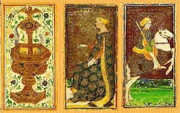
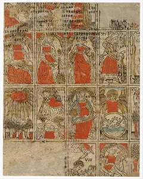
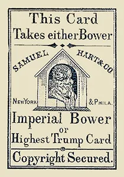
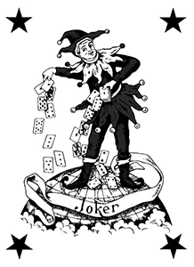
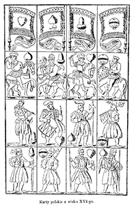
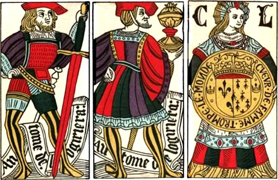
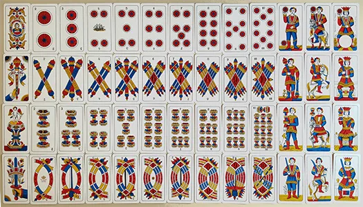
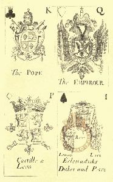
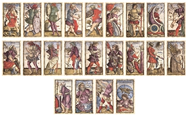
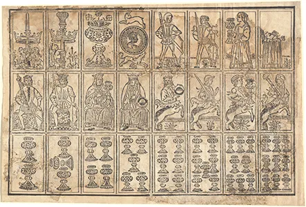

Anatomy and Production of Tarocchi
Deck Architecture
Before city-states began customizing their games, a foundational Renaissance deck was established with 78 cards divided into two explicit categories:

- The Trionfi (The Triumphs / Trumps): 22 cards featuring allegorical illustrations (now known as the Major Arcana). These acted as a permanent, standalone suit used exclusively to overpower standard cards during gameplay.
- The Suited Cards: 56 cards divided into four traditional suits (Swords, Cups, Coins, and Batons). Each suit contained ten numerical "pip" cards (1 through 10) and four Court cards: the King, Queen, Knight (Cavalieri), and Page (Fanti).

The Ancestry of Modern Playing Cards
It is a widespread myth that the standard 52-card deck evolved by simplifying the Tarocchi deck; historical evidence shows that the decks evolved from standard playing cards. Playing cards containing four suits and court cards arrived in Europe from the Islamic Mamluk Sultanate in the late 14th century. In the early 15th century, Italian creators added a fifth suit of trump cards (the carte da trionfi), inventing the game of Tarocchi.
The Joker is an American Invention
The Joker did not evolve from the Fool. The Fool (or Il Matto) has always been an integral part of Tarocchi. The Joker was invented in the United States around the 1860s as a specialized extra trump card for the popular trick-taking game Euchre. Its phonetic name derives from Jucker, the German name for Euchre.


Court Cards and the Missing Knight
The reduction of the court cards from four to three was not a simplification of the deck. In early card decks, the court structure was male: King, Knight, and Foot Soldier.

The French System: When French manufacturers standardized their deck, they chose to introduce a female Queen to replace one of the male ranks, settling on the King, Queen, and Valet (Jack).

The Tarot System: When Tarot was created, inventors intentionally expanded the court system up to four ranks specifically for Tarot games, keeping both the Knight and the Queen.
The Shift to French Suits
The evolution of the suits from Latin signs (Swords, Cups, Coins, Batons) to the modern French system (Spades, Hearts, Diamonds, Clubs) occurred to favor mass production:

By replacing the intricate, multi-colored artwork of the Latin suit signs with simple, two-toned, stenciled geometric silhouettes, French artisans in the late 15th century drastically slashed production costs. This economic efficiency is what allowed the French-suited standard deck to outcompete other regional styles and achieve global dominance.
The traditional suits transformed into the French system we recognize today: Swords became Spades, Cups became Hearts, Coins became Diamonds, and Batons became Clubs.

Production and Materiality: Luxury vs. The Street
The survival and style of early Tarocchi decks depended entirely on how they were made, dividing the game along strict socioeconomic lines:
- The Aristocratic Luxury Decks: Decks like the famous Milanese Visconti-Sforza were commissioned by nobility as individual works of art. They were individually hand-painted by court artists using egg tempera, fine inks, and real gold leaf stampings on thick card stock. Because they were too valuable to be shuffled roughly, they were preserved in pristine condition.
- The Popular Woodblock Decks: For the lower classes, card-makers (cartegiari) utilized early industrial woodblock printing. Outlines were stamped onto sheets of crude paper using carved wooden blocks, and the color was quickly applied using stencils. Because these everyday gaming decks were played with extensively in taverns, they were worn to pieces, making surviving specimens incredibly rare.

